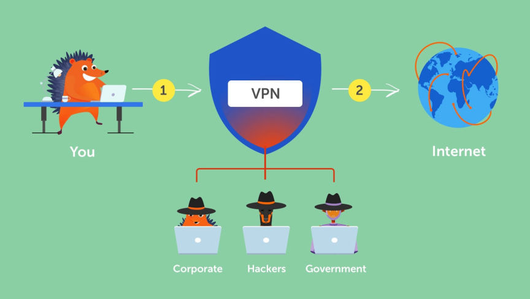
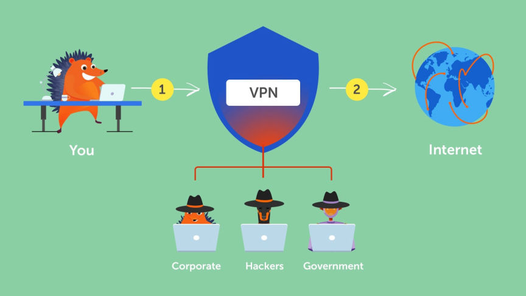

Virtual Private Network in Online Security and Privacy
A virtual private network (VPN) is a technology that allows users to create a secure connection over a public or unsecured network, such as the internet. This connection encrypts all of the data that is transmitted between the user's device and the VPN server, making it nearly impossible for anyone to intercept and read the data.
When you browse the web without a VPN your Internet Service Provider (ISP) receives your requests. Your ISP can collect data on your browsing habits and sell it to governments and advertisers.

When you use a VPN your traffic is redirected through a VPN server that becomes the source of your data. The VPN server hides your real IP address by assigning you its IP address. The server also encrypts your data so that your ISP does not know what websites you visit and what data you send and receive.
One of the main benefits of using a VPN is that it provides a high level of security for online activities. When you connect to the internet, your data is transmitted over a network of servers and routers. This data can potentially be intercepted by hackers or other malicious parties, who may use it to access your personal information. A VPN encrypts your data and secures it from interception.
Another benefit of VPNs is that they can be used to mask your IP address and location. Your IP address can be used to identify your location and track your online activities. By connecting to a VPN server in a different location, you can effectively change your IP address and appear as though you are accessing the internet from a different location. This can be useful for a variety of reasons, such as bypassing internet censorship or accessing content that is only available in certain countries.
In addition to providing security and anonymity, VPNs can also be used to unblock websites and content that may be restricted in your location. By connecting to a VPN server in a location where the content is not restricted, you can effectively bypass these filters and access the content you want.
There are different types of VPNs available, including free and paid options. Some VPNs offer additional features, such as ad blocking and malware protection, while others may be more focused on providing a high level of security.
When choosing a VPN, it is crucial to consider factors such as the level of security it provides, the speed of the connection, and the number of servers and locations available. Overall, a good VPN is fast, reliable, and respects your privacy by not keeping logs.
It is worth noting that VPNs are not foolproof and cannot completely protect you from all online threats. While they can provide a high level of security, they are not a replacement for good cybersecurity practices, such as using strong passwords and avoiding suspicious websites. Keep in mind that even though VPN providers promise that they do not keep logs, they at a minimum collect your payment details. If you cannot pay anonymously, you're better off using Tor as it doesn't collect any user information.
Overall, VPNs can be a valuable tool for protecting your online privacy and security. They are especially useful if you frequently use public Wi-Fi or need to access content that is restricted in your location. While they are not a complete solution to all online threats, they can provide an extra layer of protection and give you the peace of mind that your data is secure.
How a VPN Works
When you browse the web without a VPN your Internet Service Provider (ISP) receives your requests. Your ISP can collect data on your browsing habits and sell it to governments and advertisers.

How a VPN works
When you use a VPN your traffic is redirected through a VPN server that becomes the source of your data. The VPN server hides your real IP address by assigning you its IP address. The server also encrypts your data so that your ISP does not know what websites you visit and what data you send and receive.
Benefits of Using a VPN
One of the main benefits of using a VPN is that it provides a high level of security for online activities. When you connect to the internet, your data is transmitted over a network of servers and routers. This data can potentially be intercepted by hackers or other malicious parties, who may use it to access your personal information. A VPN encrypts your data and secures it from interception.
Another benefit of VPNs is that they can be used to mask your IP address and location. Your IP address can be used to identify your location and track your online activities. By connecting to a VPN server in a different location, you can effectively change your IP address and appear as though you are accessing the internet from a different location. This can be useful for a variety of reasons, such as bypassing internet censorship or accessing content that is only available in certain countries.
In addition to providing security and anonymity, VPNs can also be used to unblock websites and content that may be restricted in your location. By connecting to a VPN server in a location where the content is not restricted, you can effectively bypass these filters and access the content you want.
Selecting a VPN
There are different types of VPNs available, including free and paid options. Some VPNs offer additional features, such as ad blocking and malware protection, while others may be more focused on providing a high level of security.
When choosing a VPN, it is crucial to consider factors such as the level of security it provides, the speed of the connection, and the number of servers and locations available. Overall, a good VPN is fast, reliable, and respects your privacy by not keeping logs.
It is worth noting that VPNs are not foolproof and cannot completely protect you from all online threats. While they can provide a high level of security, they are not a replacement for good cybersecurity practices, such as using strong passwords and avoiding suspicious websites. Keep in mind that even though VPN providers promise that they do not keep logs, they at a minimum collect your payment details. If you cannot pay anonymously, you're better off using Tor as it doesn't collect any user information.
Overall, VPNs can be a valuable tool for protecting your online privacy and security. They are especially useful if you frequently use public Wi-Fi or need to access content that is restricted in your location. While they are not a complete solution to all online threats, they can provide an extra layer of protection and give you the peace of mind that your data is secure.